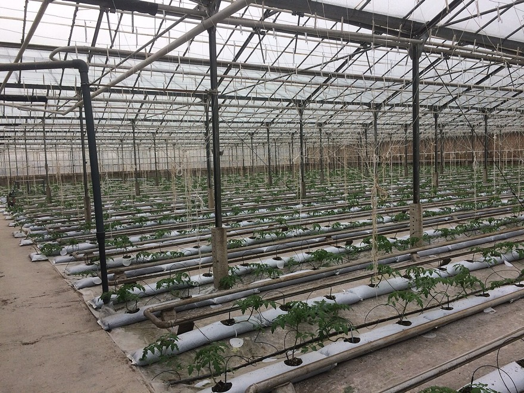
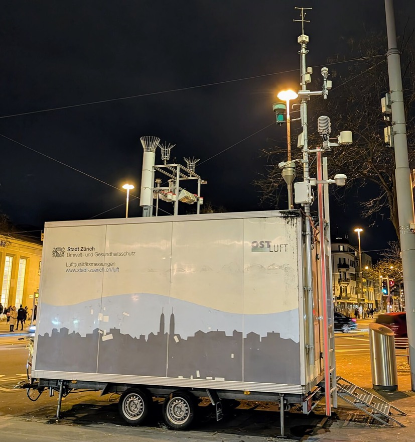
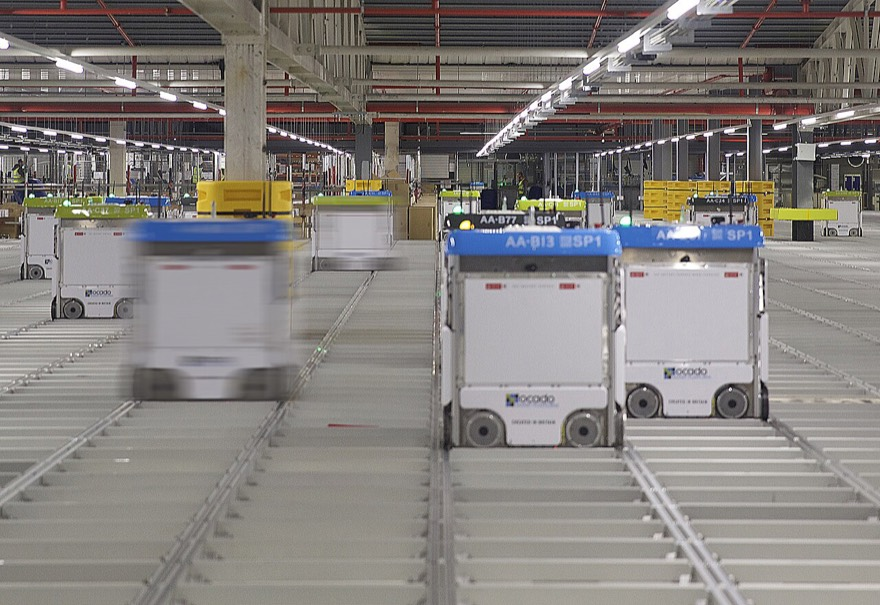

요즘 산불은 봄에만 나지 않고 일 년 내내 일어나요. 예전에는 산불이 나면 97~98%가 하루 안에 꺼졌지만, 요즘은 이틀 넘게 이어지는 경우가 늘었다고 해요.
산불이 나는 까닭을 조사해 보니 ① 산에 간 사람이 음식을 해 먹다 낸 불 ② 쓰레기 태우기 ③ 농사 부산물을 몰래 태우기 ④ 버린 담배 순서였어요.
산불을 줄이는 데 컴퓨터와 데이터가 도움이 될 수 있을까요?
40차시 · 14주차 · Ⅳ 정보과학 프로젝트 차시 목록
코드 아래 💡 코드 설명을 펼쳐 보고, 빈칸이 있으면 채운 뒤 실행해 보세요.
교과서 · Ⅳ 1-1 정보과학과 문제 해결
정보과학은 컴퓨터로 코딩만 하는 과목이 아니에요. 세상의 문제를 찾아내고, 자료를 모아 따져 보고, 프로그램으로 해결하는 방법이에요.
정보과학은 여러 분야의 문제를 어떻게 해결할까?
요즘 산불은 봄에만 나지 않고 일 년 내내 일어나요. 예전에는 산불이 나면 97~98%가 하루 안에 꺼졌지만, 요즘은 이틀 넘게 이어지는 경우가 늘었다고 해요.
산불이 나는 까닭을 조사해 보니 ① 산에 간 사람이 음식을 해 먹다 낸 불 ② 쓰레기 태우기 ③ 농사 부산물을 몰래 태우기 ④ 버린 담배 순서였어요.
산불을 줄이는 데 컴퓨터와 데이터가 도움이 될 수 있을까요?
정보과학은 데이터를 모으고(수집) → 따져 보고(분석) → 다루고(처리) → 써먹는(활용) 과정으로 실제 변화를 만들어 내요. 길이 막히는 문제는 교통 데이터를 실시간으로 모아 신호등을 알맞게 조절해서, 기후 문제는 날씨 데이터를 분석해 대응 전략을 세워서 풀 수 있어요.



친구들에게 떡볶이를 만들어 주기로 했어요. ① 무엇이 문제인지 정하고 재료를 알아봐요(몇 명? 매운 걸 못 먹는 친구는?) ② 만드는 순서를 짜요(레시피) ③ 실제로 만들어요 ④ 맛을 보고 고쳐요(싱거우면 양념 더) ⑤ 친구들에게 내놓고, 반응을 듣고 다음에 더 맛있게 만들어요. 정보과학 프로젝트도 이 순서 그대로예요.
| 단계 | 하는 일 | 이 단계에서 묻는 질문 |
|---|---|---|
| 1. 문제 발견 및 구조화 | 풀고 싶은 문제를 또렷하게 정해요(문제 정의). 관련 데이터를 모으고, 큰 문제를 작은 문제로 나눠 각각 어떻게 풀지 정리해요. | 지금 무엇이 문제이고(초기 상태), 어떻게 바뀌면 좋을까(목표 상태)? 어떤 데이터가 필요할까? |
| 2. 알고리즘 설계 | 여러 방법의 좋은 점·나쁜 점을 견주어 가장 알맞은 알고리즘을 고르거나 새로 만들어요. 필요한 데이터와 함수를 설계해요. | 어떤 순서로 풀까? 왜 이 방법이 좋을까? |
| 3. 프로그램 작성 | 설계한 알고리즘을 프로그래밍 언어로 옮겨요. 읽기 쉽고 고치기 쉽게 쓰고, 모둠원과 협업해요. | 누가 어느 부분을 만들까? 중간에 어떻게 확인할까? |
| 4. 프로그램 검증 및 디버깅 | 여러 가지 테스트 케이스로 제대로 동작하는지 확인하고(검증), 오류의 원인을 찾아 고쳐요(디버깅). | 이상한 값을 넣어도 괜찮을까? 왜 틀렸을까? |
| 5. 배포 및 유지 보수 | 다른 사람이 쓸 수 있게 내놓고(배포), 의견을 들어 기능을 더하거나 고쳐 나가요(유지 보수). | 사람들이 쓰면서 불편한 점은 없을까? |
코드를 고쳐서 ▶ 실행하면 출력이 맞는지 바로 알려 줘요. 막히면 힌트부터 열어 보세요.
학교나 집에서 불편했던 일을 하나 골라 보세요. 그리고 교과서의 산불 예시처럼 초기 상태(지금 어떤가)와 목표 상태(어떻게 되면 좋은가)를 숫자를 넣어 적어 보세요. 마지막에 그 문제를 풀 때 필요한 데이터를 두 가지 적어요.
산불 문제를 딕셔너리로 적었어요. 초기 상태에서 목표 상태까지 몇 건을 줄여야 하는지, 그게 몇 % 감소인지 계산하도록 ___를 채우세요. 목표를 숫자로 적어 두면 나중에 ‘얼마나 이루었나’를 잴 수 있어요.
problem = {'이름': '산불 줄이기', '초기': 175, '목표': 100}
gap = problem[___] - problem['목표'] # 줄여야 할 건수
rate = gap / problem['초기'] * ___ # 몇 퍼센트 감소인가
print(f"{problem['이름']}: {gap}건 줄이기")
print(f"감소율: {rate:.1f}%")
초기 상태 값을 꺼내는 키는 '초기'이고, 비율을 퍼센트로 바꾸려면 100을 곱해요.
problem = {'이름': '산불 줄이기', '초기': 175, '목표': 100}
gap = problem['초기'] - problem['목표'] # 줄여야 할 건수
rate = gap / problem['초기'] * 100 # 몇 퍼센트 감소인가
print(f"{problem['이름']}: {gap}건 줄이기")
print(f"감소율: {rate:.1f}%")
문제 해결 다섯 단계를 출력하는 코드인데, 두 군데가 틀렸어요. 단계 순서가 하나 뒤바뀌어 있고, 반복 범위 때문에 마지막 단계가 출력되지 않아요. 고쳐서 1단계부터 5단계까지 올바르게 나오게 하세요.
steps = ['문제 발견 및 구조화', '프로그램 작성', '알고리즘 설계',
'프로그램 검증 및 디버깅', '배포 및 유지 보수']
for i in range(len(steps) - 1):
print(f"{i + 1}단계: {steps[i]}")
설계를 먼저 하고 나서 코드를 써요. range(len(steps))는 0부터 4까지 다섯 번 돌아요.
steps = ['문제 발견 및 구조화', '알고리즘 설계', '프로그램 작성',
'프로그램 검증 및 디버깅', '배포 및 유지 보수']
for i in range(len(steps)):
print(f"{i + 1}단계: {steps[i]}")
해설 — 검증(제대로 도는지 확인)과 디버깅(오류 원인을 찾아 고치기)은 4단계에서 해요.
해설 — 초기 상태와 목표 상태를 숫자로 적어야 해결했는지 아닌지를 판단할 수 있어요.
떡볶이 만들기에 빗대어, 문제 해결 다섯 단계를 내 말로 한 줄씩 적어 보세요.